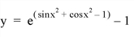

The FX_ROOT function computes a real or complex root of a univariate nonlinear function using an optimal Müller’s method.
FX_ROOT uses an algorithm that is described in section 9.5 of Numerical Recipes in C: The Art of Scientific Computing (Second Edition), published by Cambridge University Press, and is used by permission.
This routine is written in the IDL language. Its source code can be found in the file fx_root.pro in the lib subdirectory of the IDL distribution.
Result = FX_ROOT( X , Func [, / DOUBLE ] [, ITMAX = value ] [, / STOP ] [, TOL = value ] )
The return value is the real or complex root of a univariate nonlinear function. Which root results depends on the initial guess provided for this routine.
A 3-element real or complex initial guess vector. Real initial guesses may result in real or complex roots. Complex initial guesses will result in complex roots.
A scalar string specifying the name of a user-supplied IDL function that defines the univariate nonlinear function. This function must accept the argument X, and must return a three-element vector containing the function value at the three points in X.
For example, suppose we wish to find a root of the following function:

We write a function FUNC to express the function in the IDL language:
FUNCTION func, X
RETURN, EXP(SIN(X)^2 + COS(X)^2 - 1) - 1
END
Set this keyword to force the computation to be done in double-precision arithmetic.
The maximum allowed number of iterations. The default is 100.
Use this keyword to specify the stopping criterion used to judge the accuracy of a computed root r( k ). Setting STOP = 0 (the default) checks whether the absolute value of the difference between two successively-computed roots, | r( k ) - r( k +1) | is less than the stopping tolerance TOL. Setting STOP = 1 checks whether the absolute value of the function FUNC at the current root, | FUNC(r( k )) |, is less than TOL.
Use this keyword to specify the stopping error tolerance. The default is 1.0 x 10 -4 .
This example finds the roots of the function FUNC defined above:
; First define a real 3-element initial guess vector:
x = [0.0, -!pi/2, !pi]
; Compute a root of the function using double-precision
; arithmetic:
root = FX_ROOT(X, 'FUNC', /DOUBLE)
; Check the accuracy of the computed root:
PRINT, EXP(SIN(ROOT)^2 + COS(ROOT)^2 - 1) - 1
IDL prints:
0.0000000
We can also define a complex 3-element initial guess vector:
x = [COMPLEX(-!PI/3, 0), COMPLEX(0, !PI), COMPLEX(0, -!PI/6)]
; Compute the root of the function:
root = FX_ROOT(x, 'FUNC')
; Check the accuracy of the computed complex root:
PRINT, EXP(SIN(ROOT)^2 + COS(ROOT)^2 - 1) - 1
IDL prints:
( 0.00000, 0.00000)
|
Pre 4.0 |
Introduced |